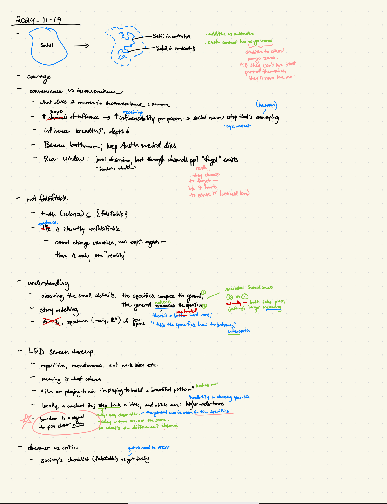
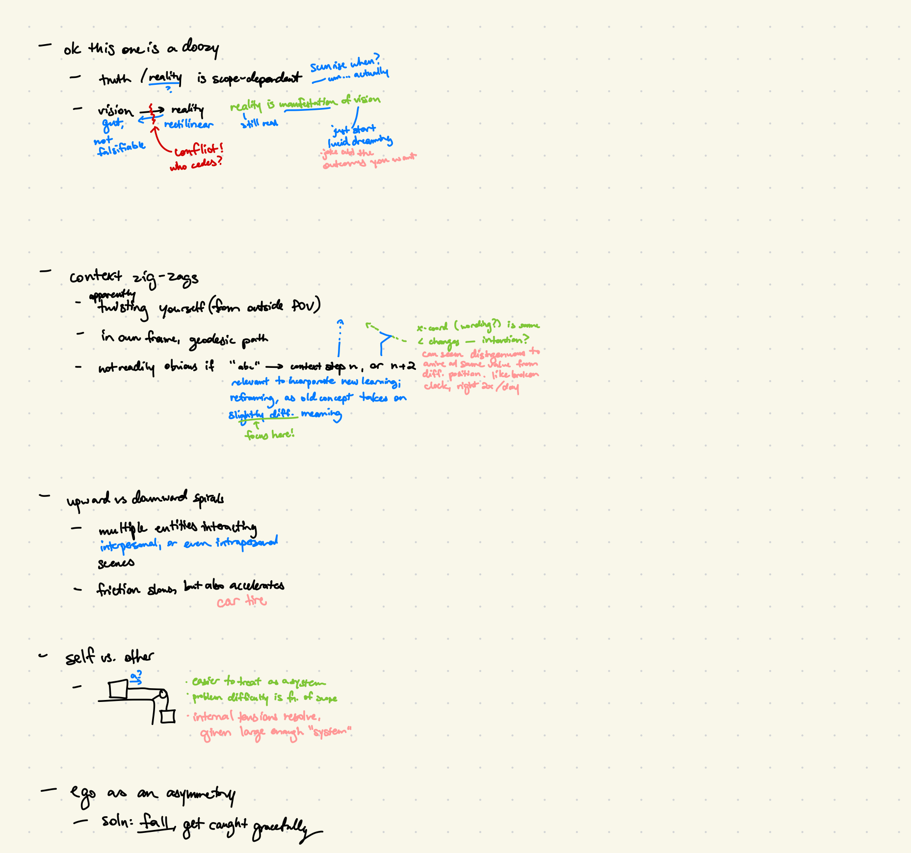
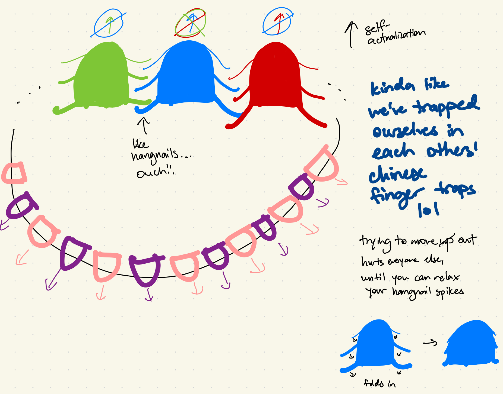

okay my main goal with this whiteboard was to reduce the barrier between thought --> noting it down, even if it's raw and unfleshed out -- i haven't done a super great job of that but i have some sketches here from around november of last year, and i'll present them with little context
if there are any of these ideas that you'd like me to expand on, or clarify, lmk! it would be nice to know if any of this makes any sense, and where it doesn't. without further ado, enjoy some schizo-posting:
  yeah this last one might need some context... i was moderately high LOL and kinda thinking abt why self-actualization feels so difficult, and why it feels like it comes at the cost of harming others sometimes, and how it's a symmetrical problem, and this distinct visual popped in my head, with the strong sensory experience of those "hangnails" getting pulled